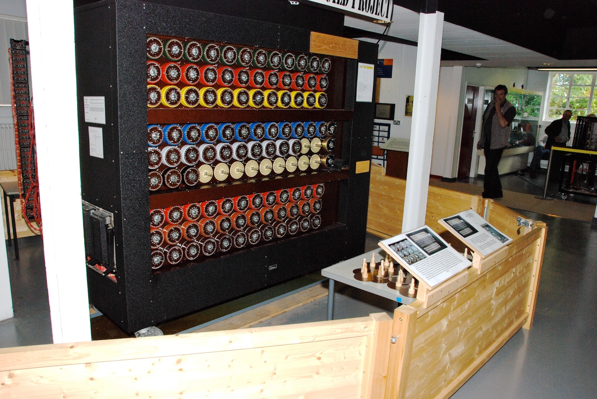

Alan Turing foi um matemático que fez significantes contribuições para a área da Ciência da Computação. Nessa aula, vamos fazer uma pesquisa sobre ele para tentar entender essas constribuições e o contexto onde ele vivia.
O objetivo dessa pesquisa é que no final dela, vocês preparem um cartaz virtual apresentando o Alan Turing para outras pessoas. Este cartaz pode ser feito no PowerPoint, no Canvas ou em qualquer outro app que vocês se sintam mais confortáveis.
Com auxílio dos sites de busca da internet, pesquisem sobre o Alan Turing e suas contribuições. Seguem abaixo algumas perguntas que podem ajudar a guiar essa pesquisa.
1. Quais são as grandes contribuições de Alan Turing?
2. Escolha uma dessas contribuições e pesquise mais a fundo sobre ela. Escreva toda a história por trás dessa contribuição.
3. Quando Alan Turing viveu? Comparando as datas de nascimento e morte de Turing, quais grandes eventos aconteceram no mundo?
4. Em 2013, existe um acontecimento relevante relacionado à vida de Alan Turing (mesmo que ele já estivesse morto nessa data). Que acontecimento é este?
5. Existem outros fatos ou curiosidades sobre o Alan Turing? Quais?
Depois de realizar toda essa pesquisa, vamos agora pensar em como podemos criar o nosso cartaz apresentando o Alan Turing. Escolham um aplicativo e comecem a montar o seu cartaz. Além de ter as informações importantes que queremos apresentar para as pessoas, é importante que seu cartaz tenha figuras e/ou fotografias para chamar atenção das pessoas.
Lembrem-se de sempre checar se as informações que vocês estão utilizando no cartaz são mesmo verdadeiras.
